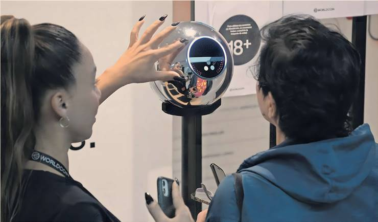

George Steer — New York

A new generation of high-octane crypto ventures are expanding risk-taking with new forms of digital asset loans, three years after a market crash triggered a wave of insolvencies for lenders across the industry.
A San Francisco-based lender called Divine Research said it had extended roughly 30,000 unbacked short-term loans since December, working with OpenAI chief Sam Altman’s iris-scanning crypto group World to identify borrowers.
Crypto lending — a highly risky part of the digital assets market — blew up in 2022 after a fall in crypto asset prices triggered a spiral of defaults and bankruptcies, culminating in the collapse of the FTX exchange.
The so-called crypto winter that followed lasted for almost two years. But President Donald Trump’s unabashed embrace of digital assets has sent investors flooding back into the market. The price of bitcoin has raced to record highs and major financial institutions like JPMorgan are considering dipping their toes into crypto lending.
“We're loaning to average folks like high-school teachers, fruit vendors... basically anyone with access to the internet can get access to our funds,” Divine’s founder Diego Estevez told the Financial Times. “This is microfinance on steroids.”
Divine offers loans of less than $1,000 worth of Circle’s stablecoin USDC — a crypto asset that matches the value of the US dollar — to cash-strapped consumers, mostly overseas. It describes its borrowers as underserved by “traditional institutions.”
It uses Altman’s iris-scanning system to make sure borrowers who default on their loans cannot create a new account. The loans mostly come with fixed interest rates of between 20 and 30 per cent.
Among Divine’s peers is crypto group 3Jane, which in June received $5.2mn in seed funding from venture group Paradigm — which previously invested in FTX.
The start-up is already extending uncollateralised USDC credit lines on the Ethereum blockchain. 3Jane says borrowers have to show “verifiable proofs” of crypto, bank assets or future cash flows to back the loan but do not have to hand over any collateral.
Unsecured lending is inherently risky because there are no assets available to recoup losses if a borrower defaults. But it represents a huge opportunity for the crypto industry, insiders say.
Defaulted loans on the 3Jane protocol are sold to US collections agencies.
3Jane is also developing a new lending platform that would involve AI agents, programmes that can execute tasks based on user instructions. These agents would be “programmatically obliged to follow debt covenants” and could therefore be lent to “at much lower rates,” 3Jane says.
US-listed crypto exchange Coinbase in March said it had teamed up with Altman’s OpenAI to create AI agents with their own crypto wallets and “equipped with commercial and monetary capabilities.”
Another protocol called Wildcat is built for market makers and crypto trading firms seeking to establish “highly customisable, fixed-rate, undercollateralised credit facilities” using Ethereum, the second-largest crypto ecosystem.
Roughly $170mn has so far been lent on its platform.
Like peers Clearpool and TrueFi, Wildcat allows approved borrowers to create markets where they specify their own terms, such as interest rates, maturity, and maximum loan capacity.
Default rates for the first loan taken out average about 40 per cent, Estevez said. High interest rates “compensate for these losses,” and free tokens issued to anyone who scans their eye using World can be “partially” reclaimed.
Most of Divine’s borrowers are not regular users of crypto before signing up. The scheme was piloted in Argentina, which has suffered years of steep inflation.
Loans are funded by deposits from individuals, who Estevez said are typically people seeking “good yields.”
He added: “Anyone can provide liquidity. We’ve engineered the system such that, after accounting for default rates and the interest rates on offer, providers will always make a profit.”
Crypto lending funded by individuals was at the centre of the 2022 crash when lenders like Celsius and Genesis were unable to pay back their depositors and filed for bankruptcy. Celsius chief executive Alex Mashinsky was sentenced to 12 years in prison for fraud and market manipulation. Genesis agreed to a $2bn settlement to resolve a lawsuit brought by New York’s attorney-general, alleging that it defrauded more than 230,000 investors. Genesis did not acknowledge wrongdoing in the case.
Unsecured loans make up a small fraction of the multibillion-dollar crypto lending market where groups including Coinbase, Tether and Galaxy dominate. Major Wall Street banks have also begun extending collateralised loans to some crypto holders. Cantor Fitzgerald this month announced a $2bn “Bitcoin Financing Business” initiative to provide leverage to investors who hold the world’s most valuable digital asset.